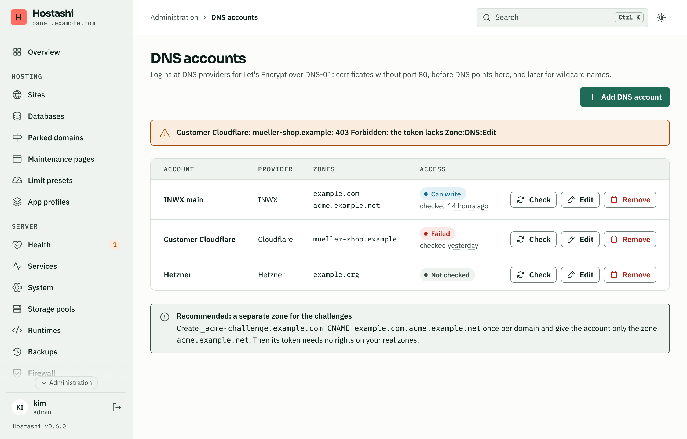
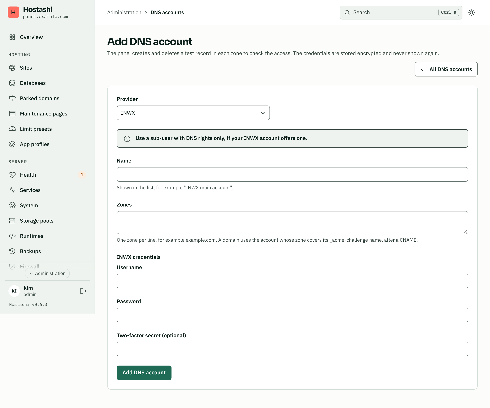
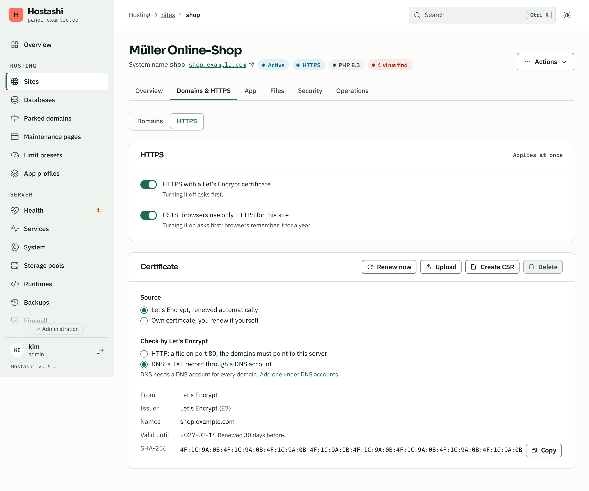

DNS accounts¶
By default Let's Encrypt checks a domain over HTTP: it fetches a file from port 80 of the server the domain points to. With a DNS account, Hostashi can prove the domain over DNS instead (DNS-01): it writes a short-lived TXT record through the API of your DNS provider. That helps when
- port 80 is closed or the site sits behind a proxy that does not pass the check through,
- you want the certificate before the domain points to this server, for example when you move a site,
- and later for wildcard names such as
*.example.com, which Let's Encrypt only issues over DNS.
Hostashi does not run DNS itself. It only creates and deletes _acme-challenge TXT records at your provider.
For: admins. Managers and users see which check a site uses but cannot switch it to DNS, because DNS can get certificates for names that do not point to this server.

Providers¶
| Provider | What Hostashi needs |
|---|---|
| Cloudflare | An API token with Zone: Read and DNS: Edit on the needed zones only. Never the global API key. |
| Hetzner | A read/write API token of a Hetzner Cloud project. Use a separate project that holds only DNS zones: a token of a project with servers can delete them. Tokens of the old DNS Console do not work. |
| INWX | Username and password, and the shared secret if the account uses two-factor login. Use a sub-user with DNS rights only, if your account offers one. |
Add an account¶
- Go to Administration › DNS accounts and click Add DNS account.
- Choose the provider, give the account a name and list its zones, one per line, for example
example.com. - Enter the credentials and click Add DNS account.

Hostashi then checks the access: it creates and deletes a test record _acme-challenge.<zone> in each zone. The list shows Can write, or Failed with the provider's answer. A failed check does not stop you from saving; fix the token or the zones and click Check.
The credentials are stored encrypted and are never shown again, not even to admins. To change them, edit the account and tick Replace the credentials; otherwise they stay as they are.
Each zone belongs to one account. A zone may be a subdomain, for example acme.example.net.
Which account a domain uses¶
For each domain, Hostashi looks at the name the TXT record must have: _acme-challenge.<domain>, or where a CNAME there points. The account whose zone covers that name, the longest one if several do, writes the record. A domain that no account covers cannot use DNS: the panel says which challenge name is missing.
Recommended: a separate zone for the challenges¶
A token that can edit your real zones can also change your MX or A records. You can avoid that by delegating only the challenge records to a zone that exists for nothing else:
- Create a zone, for example
acme.example.net, at a provider Hostashi supports, and add a DNS account for only that zone. - Once per domain, add a CNAME at the domain's own DNS, wherever it is:
_acme-challenge.example.com. CNAME example.com.acme.example.net.
- Hostashi follows the CNAME and writes the TXT record into
acme.example.net.
The domain's own DNS can then stay at any provider, also one Hostashi does not support, and the token has no rights on your real zones.
Switch a site to DNS¶
On the site's Domains & HTTPS › HTTPS tab, under Check by Let's Encrypt, choose DNS: a TXT record through a DNS account. Hostashi refuses the switch if a domain of the site has no account. The current certificate stays; its renewals, Renew now and a new certificate after a domain change go over DNS from then on.

For the panel's own address, the same choice is on the System page under Panel certificate.
A DNS certificate takes longer than one over HTTP, usually one to three minutes: Hostashi waits until the zone's name servers show the record before Let's Encrypt checks it.
Remove an account¶
Remove asks first. Hostashi refuses to remove an account, or to take a zone away from it, while a site or the panel gets its certificate over DNS through it. Switch those to HTTP or give their zones to another account first.
API¶
GET /api/v1/dns-providerslists the providers and their fields.GETandPOST /api/v1/dns-accounts,GET,PUTandDELETE /api/v1/dns-accounts/{id},POST /api/v1/dns-accounts/{id}/check. Tokens needdns_accounts:readordns_accounts:write; only admins can create such tokens.PUT /api/v1/sites/{name}/tls/challengeandPUT /api/v1/panel/tls/challengewith{"challenge": "dns"}or{"challenge": "http"}.
A domain without an account answers 422 no_dns_account; removing an account in use answers 409 dns_account_in_use. Every change goes into the audit log; the credentials never do.
On the command line, for example:
hostashi api dns-accounts add label="INWX main" provider=inwx zones=example.com,acme.example.net 'credentials:={"username":"dns-user","password":"…"}'
hostashi api sites set-tls-challenge shop challenge=dns